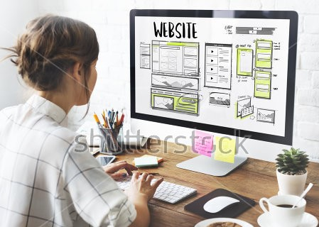

El diseño es la apariencia que se le da al sitio web tiene, el diseñador web debe encargase de analizar, organizar y jerarquizar la información esto se lleva acabo para dar con el propósito del sitio web al mismo tiempo se plantea los objetivos a los que a punta y al tipo de audiencia a la que va dirigida el sitio, al mismo tiempo mejorar la facilidad de interfaz de usuario para una mejor experiencia. Se debe selecciona un buen contenido como texto, fotos y videos estos deben ser optimizados para el usuario y los motores de búsqueda (SEO), concretando esto el diseñador puede pasar al desarrollo utilizando lenguajes de programación tales como HTML y CSS al final se deben realizar una serie de pruebas técnicas, compatibilidad con navegadores. pasando ya esta fase de pruebas se puede proceder al lanzamiento del sitio web.
• Navegabilidad: es la facilidad en la que un usuario navega en la web.
• Usabilidad: es la facilidad con la que el usuario encuentra el tema que le es de interés.
• Arquitectura de la información: es el cómo está distribuido el contenido de la información.